The AI Landscape — An Architect’s Map
Cutting Through the Hype
If you’ve been in enterprise architecture for any length of time, you’ve lived through waves of technology hype before. You saw it with cloud computing, with microservices, with blockchain, and now with AI. Every vendor pitch deck has been hastily rewritten to include the words “AI-powered,” and every product demo seems to feature a chatbot whether it makes sense or not. The noise is deafening, and your job — perhaps the most important part of your job right now — is to see through the marketing and understand what’s actually useful for your enterprise.
This chapter is designed to give you that clarity. Think of it as a map of the AI landscape drawn specifically for someone who thinks in terms of architecture layers, integration patterns, and long-term maintainability. We’re not going to get caught up in the latest model benchmark or the newest startup that just raised a hundred million dollars. Instead, we’re going to build a mental framework that will help you evaluate any AI technology that crosses your desk, today or three years from now.
The AI Stack — Mapped to What You Know
One of the most useful things you can do when approaching any new technology domain is to map it onto concepts you already understand. And the good news is that AI, for all its mystique, follows the same layered architecture pattern that you’ve been working with for years. There are layers, each with its own concerns, its own vendors, and its own set of decisions that need to be made. Let’s look at how they stack up.
At the top, you have the applications layer — the user-facing experiences that are powered by AI. Below that sits the orchestration layer, which is where you wire AI components together into workflows, chains, and agentic systems. The models layer contains the actual AI engines, whether those are large language models, vision models, or embedding models. Beneath the models, you need a robust data platform — your lakes, vector stores, and ETL pipelines that feed data into the system. And at the foundation, you have infrastructure: the GPUs, TPUs, and cloud services that provide the raw compute.
If you’re familiar with TOGAF, this maps directly to your technology architecture — it’s just that each layer now contains some new and unfamiliar components. The patterns of layered architecture, separation of concerns, and well-defined interfaces between layers all still apply. That should be reassuring. You don’t need to throw away everything you know about architecture; you need to extend it.
Types of AI That Matter for Architects

Not all AI is created equal, and one of the fastest ways to lose credibility in an architecture review is to treat it as if it were. The architectural implications of a fraud detection model are radically different from those of a generative chatbot, and both are different again from a computer vision system running quality inspection on a factory floor. Let’s walk through the major categories and what each one means for your architecture.
Traditional ML (Predictive AI)
Traditional machine learning — sometimes called predictive AI — is the workhorse that has been quietly running in enterprises for years now. It takes input data and predicts an outcome. Think fraud detection systems that flag suspicious transactions, demand forecasting models that help supply chain teams plan inventory, or churn prediction engines that alert your customer success team before a high-value client walks away. These are well-understood problems with well-understood solutions.
From an architecture standpoint, traditional ML is relatively contained and predictable. You need a training pipeline to build and update the model, a serving endpoint where other systems can call it for predictions, and monitoring to track whether the model’s accuracy is drifting over time. The model itself is essentially a black box behind a clean API — which is exactly how you want it from an integration perspective. The blast radius of a traditional ML deployment is small and manageable.
The sweet spot for predictive ML is structured data with well-defined prediction tasks, especially when you need to make high-volume decisions quickly. If you have a table of features and a column you want to predict, traditional ML is probably your best and most cost-effective bet. Don’t reach for a large language model when a gradient-boosted tree will do the job faster and cheaper.
Generative AI (LLMs, Image, Video)
Generative AI is where most of the current excitement — and confusion — lives. These are the models that create new content: text, images, code, video, and more. They power the chatbots, document generation systems, code assistants, and creative tools that have captured the world’s imagination over the past few years. And they are genuinely transformative for many enterprise use cases, from automating knowledge work to building natural language interfaces for complex systems.
However, the architectural implications of generative AI are far larger than those of traditional ML, and this is where many organizations get into trouble. These models are expensive to run, often costing orders of magnitude more per inference call than a traditional ML model. They require careful prompt management, which is a new discipline that sits somewhere between software engineering and content design. They can hallucinate — confidently producing incorrect information — which means you often need to ground them in your enterprise data through patterns like Retrieval-Augmented Generation, or RAG. And they introduce entirely new categories of security concerns, including prompt injection attacks and the risk of sensitive data leaking through model interactions.
Generative AI shines when you’re dealing with unstructured data processing, content generation, natural language interfaces, or automating the kind of knowledge work that previously required a human to read, synthesize, and write. But it requires a much more thoughtful architecture than simply “call the API and display the response.”
Computer Vision
Computer vision is the branch of AI that enables machines to understand and interpret images and video. In the enterprise world, this shows up as quality inspection on manufacturing lines, automated document processing through intelligent OCR, surveillance and security systems, and medical imaging analysis. It’s a mature and well-proven area of AI with clear ROI in the right contexts.
The architecture challenges with computer vision are distinct from those of text-based AI. You’re dealing with high compute requirements, large data volumes — video streams can generate enormous amounts of data — and often the need for edge deployment. One of the key architectural decisions you’ll face is where inference should run: in the cloud, where you have virtually unlimited compute but need to stream data over a network, or at the edge, where latency is lower but hardware is constrained. For any use case involving real-time video processing at scale, this decision can make or break the project.
Speech and NLP
Speech processing and natural language processing encompass a range of capabilities including transcription, translation, sentiment analysis, and entity extraction. These technologies have matured significantly and are now table stakes for many enterprise applications, from call center analytics to multilingual customer support.
From an architecture perspective, speech and NLP introduce their own set of considerations. Real-time processing is often a hard requirement — nobody wants to wait thirty seconds for their voice command to be transcribed. This means you need streaming architectures that can handle audio data in near-real-time. Multi-language support adds another layer of complexity, as models may perform unevenly across languages. And increasingly, speech and NLP capabilities are being combined with large language models to create systems that can not only transcribe what was said but understand the intent behind it and generate an intelligent response. That combination creates powerful applications but also compounds the architectural complexity.
The Model Landscape
Foundation Models (The Big Ones)
The foundation model landscape is evolving rapidly, but as an architect, you need to have a working understanding of the major players and what differentiates them. The table below captures the current state of play, but keep in mind that new models and capabilities are being released on a near-monthly basis.
| Model Family | Provider | Strengths | Typical Use |
|---|---|---|---|
| GPT-4o, o1 | OpenAI | Reasoning, code, general | Broad enterprise use |
| Claude | Anthropic | Long context, safety, analysis | Document processing, coding |
| Gemini | Multimodal, Google integration | GCP-native workloads | |
| Llama | Meta (open) | Customizable, self-hosted | Privacy-sensitive workloads |
| Mistral | Mistral (open) | Efficient, multilingual | European enterprises, edge |
Beyond just picking a model family, there’s a more fundamental architectural decision embedded in this landscape, and it’s one you’ll revisit repeatedly throughout your AI journey. You’re essentially choosing between two deployment paradigms. On one side, you have API-based models — services like OpenAI’s GPT-4 or Anthropic’s Claude that you access over an API. These are faster to get started with and require no ML operations expertise, but they create a vendor dependency and mean your data leaves your security perimeter with every call. On the other side, you have self-hosted models — open models like Llama or Mistral that you run on your own infrastructure. These give you more control over data residency and model behavior, but they come with a significantly higher operational burden. Neither approach is universally better; the right answer depends on your organization’s specific constraints around data sensitivity, cost tolerance, and team capabilities.
Specialized Models
It’s tempting to reach for the biggest, most capable foundation model for every problem, but that’s a bit like using a fire hose to water a houseplant. Not everything needs a model with hundreds of billions of parameters that costs millions of dollars to train. In fact, many enterprise tasks are better served by smaller, more focused models that do one thing extremely well.
Embedding models, for instance, are purpose-built to convert text
into vector representations that enable semantic search. Models like
text-embedding-3-large are designed specifically for this
task and do it far more efficiently than asking a general-purpose LLM to
understand similarity. Classification models are another excellent
example — when you need to route customer inquiries, label support
tickets, or triage incoming documents, a lightweight classifier can
handle the job with lower latency and dramatically lower cost than a
full-size foundation model. Document AI and OCR models specialize in
extracting structured data from unstructured documents like invoices,
contracts, and forms. And speech-to-text models are purpose-built for
transcription tasks like recording meetings and processing call center
conversations.
Here’s a rule of thumb that will serve you well as an architect: always use the smallest model that reliably solves the problem. A seven-billion parameter model running on a single GPU may actually outperform GPT-4 on your specific domain task — and it might do so at one-hundredth of the cost. Right-sizing your model choices is one of the highest-leverage architectural decisions you can make, and it’s one that many organizations get wrong because they default to the most impressive-sounding option rather than the most appropriate one.
Vendor Landscape for Architects
Cloud AI Platforms
If your organization is already invested in one of the major cloud platforms, that will naturally shape your AI platform choices. Each of the big three has built out a comprehensive AI service portfolio, and while there’s significant overlap, each has its own strengths and areas of tight integration.
| Platform | Key Services | Best For |
|---|---|---|
| Google Cloud (Vertex AI) | Model Garden, Agent Builder, Gemini | GCP shops, multimodal |
| AWS (Bedrock, SageMaker) | Model marketplace, fine-tuning | AWS shops, existing ML teams |
| Azure (OpenAI Service, AI Studio) | GPT-4, Copilot stack | Microsoft ecosystem |
The practical reality is that most enterprises will gravitate toward the AI services offered by their primary cloud provider, and that’s generally a sensible default. The integration benefits — shared identity management, network connectivity, billing consolidation, and compliance posture — are significant. However, don’t let cloud loyalty blind you to cases where a different provider might offer a meaningfully better solution for a specific workload. Multi-cloud AI is more common than you might expect, especially for organizations that want to avoid putting all their AI eggs in one vendor’s basket.
AI Infrastructure Vendors
Beyond the cloud platforms themselves, there’s a rapidly growing ecosystem of specialized AI infrastructure vendors that fill important gaps in the stack. Understanding these categories will help you assemble a coherent architecture rather than ending up with a patchwork of point solutions.
Vector databases are a new category that didn’t exist in most enterprise architectures a few years ago, but they’ve become essential for any AI system that needs to search over large collections of unstructured data. Products like Pinecone, Weaviate, Qdrant, and Chroma are purpose-built for storing and querying vector embeddings, while pgvector offers a pragmatic option for teams that want to add vector search to their existing PostgreSQL infrastructure without introducing a new database technology.
On the orchestration side, frameworks like LangChain, LlamaIndex, and Microsoft’s Semantic Kernel provide the plumbing for connecting AI models with data sources, tools, and multi-step workflows. These frameworks are evolving quickly and are worth evaluating carefully — they can dramatically accelerate development, but they can also introduce abstraction layers that obscure what’s happening under the hood.
Observability for AI systems is another emerging category that deserves your attention. Tools like LangSmith, Weights & Biases, and Arize help you monitor model performance, debug issues in production, and track the quality of AI outputs over time. This is not optional — running AI in production without proper observability is like running a web application without logging or monitoring.
Finally, guardrails tooling — products like Guardrails AI, NVIDIA’s NeMo Guardrails, and various custom solutions — helps you enforce safety policies, content filters, and output validation on AI-generated content. As an architect, you should think of guardrails as a required component of any production AI system, not an afterthought.
Build vs. Buy Decision Framework
One of the most consequential decisions you’ll make as an architect is whether to build AI capabilities in-house or consume them as services. This decision doesn’t have to be all-or-nothing — most enterprises end up with a mix — but you need a clear framework for making the call on a case-by-case basis.
| Factor | Build/Self-Host | Use API/SaaS |
|---|---|---|
| Data sensitivity | High (regulated data) | Low (public data OK) |
| Customization needs | Deep domain-specific | General purpose |
| Team ML expertise | Strong ML eng team | Limited ML skills |
| Volume | Very high (cost advantage) | Low-moderate |
| Time to value | Can wait 3-6 months | Need it now |
The table above gives you a quick reference, but let me add some color. Data sensitivity is often the single strongest forcing function. If you’re working with healthcare records, financial data, or classified information, the compliance requirements may simply rule out sending that data to a third-party API, full stop. On the other hand, if you need to get something into production quickly and your team doesn’t have deep ML engineering expertise, trying to self-host and fine-tune your own models is likely to end in frustration and delay. Be honest about where your organization actually is, not where you wish it were.
What Architects Get Wrong
Having seen dozens of enterprise AI initiatives, some successful and many not, there are a few recurring patterns where architects tend to stumble. Being aware of these pitfalls won’t guarantee success, but it will help you avoid the most common and most costly mistakes.
The first mistake is treating all AI as if it were one thing. A fraud detection model and a customer-facing chatbot have completely different architectural profiles — different latency requirements, different cost structures, different risk profiles, different governance needs. When an architecture review lumps them together under a single “AI platform” box on a diagram, it’s a sign that the thinking hasn’t gone deep enough. Each AI use case deserves its own architectural analysis.
The second mistake is over-indexing on model choice. It’s easy to get drawn into heated debates about whether GPT-4 or Claude or Gemini is the “best” model, but in most enterprise deployments, the model turns out to be the easiest part of the puzzle. The genuinely hard work is building reliable data pipelines that feed the model with accurate, up-to-date information, designing integration patterns that connect AI outputs back into business processes, and establishing governance frameworks that ensure the system behaves responsibly over time. If you’re spending eighty percent of your architecture discussions on model selection, your priorities are inverted.
The third mistake is ignoring cost at design time. This one catches a lot of organizations off guard. A single GPT-4 API call might cost around three cents, which sounds trivially cheap — until you do the math at enterprise scale. At one million requests per day, that’s thirty thousand dollars a day, or nearly eleven million dollars a year. Cost modeling needs to be a first-class concern in your architecture from day one, not something you discover painfully in your first production invoice. Design for cost optimization the same way you design for performance and reliability. Chapter 12 provides a complete framework for AI cost modeling, including token economics, GPU budgeting, and optimization strategies at enterprise scale.
The fourth and perhaps most fundamental mistake is assuming that AI replaces existing systems. It doesn’t. AI augments your existing systems. You still need your ERP, your CRM, your data warehouse, and your integration middleware. AI adds a new layer of intelligence on top of those systems, but it doesn’t eliminate the need for them. Architects who understand this build AI capabilities that integrate cleanly with the existing enterprise landscape. Architects who don’t end up creating isolated AI experiments that never make it into production.
Key Takeaways
- The AI technology stack maps cleanly onto the traditional architecture layers you already know, so use that familiar mental model as your starting point for understanding where AI components fit.
- It’s essential to distinguish between predictive ML, generative AI, computer vision, and speech/NLP, because each category carries fundamentally different architecture requirements, cost profiles, and risk characteristics.
- The choice between foundation models and specialized models is a critical design decision that directly impacts cost, performance, and operational complexity — always reach for the smallest model that solves the problem.
- The build-versus-buy decision for AI capabilities should be driven primarily by data sensitivity, cost at scale, team expertise, and the degree of customization your use case demands.
- Never forget that the model itself represents perhaps ten percent of the overall architecture — the other ninety percent is data pipelines, system integration, governance, monitoring, and all the unglamorous infrastructure that makes AI actually work in production.
Companion Notebook
 — Call three
different LLMs (OpenAI, Claude, Gemini) with the same prompt. Compare
response quality, latency, cost, and token usage. See why model
selection matters.
— Call three
different LLMs (OpenAI, Claude, Gemini) with the same prompt. Compare
response quality, latency, cost, and token usage. See why model
selection matters.